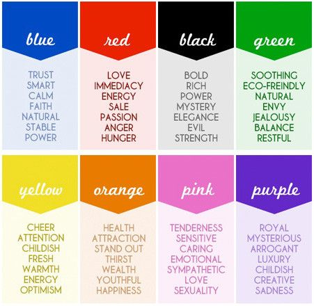
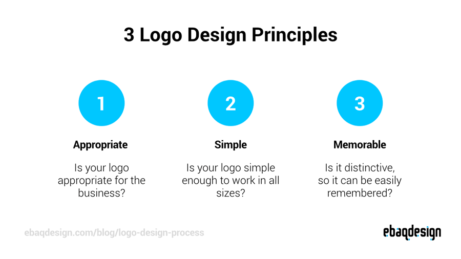

About MP
Media production refers to the creation of media content for various platforms and channels, including film, television, radio, and digital media. It involves the planning, scripting, filming, editing, and distribution of media content.
Overall, media production is a dynamic and exciting field that requires a blend of technical and creative skills. Whether you're interested in producing films, creating digital media content, or working in radio or television, a career in media production can offer a range of opportunities to express your creativity and engage with audiences.
Week 1
Colors, what the meaning of them
-

Week 2
Typography lesson

Week 3
Short recap what we did at the weeks:
-
